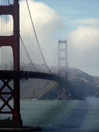

Your Tour Guide
The City by the Bay
San Francisco is located on the West Coast of the United States at the tip of the San Francisco Peninsula and includes significant stretches of the Pacific Ocean and San Francisco Bay within its boundaries.
Today, San Francisco is one of the top tourist destinations in the world, ranking 33rd out of the 100 most visited cities worldwide, and is renowned for its chilly summer fog, steep rolling hills, eclectic mix of architecture, and its famous landmarks, including the Golden Gate Bridge, cable cars, and Chinatown. The city is also a principal banking and finance center, and the home to more than 30 international financial institutions, helping to make San Francisco rank eighteenth in the world's top producing cities, ninth in the United States, and thirteenth place in the top twenty global financial centers.
| population | 805,235 |
|---|---|
| area | 46.9 square miles |
| elevation | 52 ft. |
| founded | 1776 |